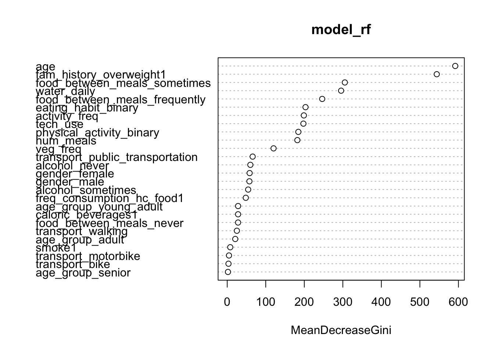
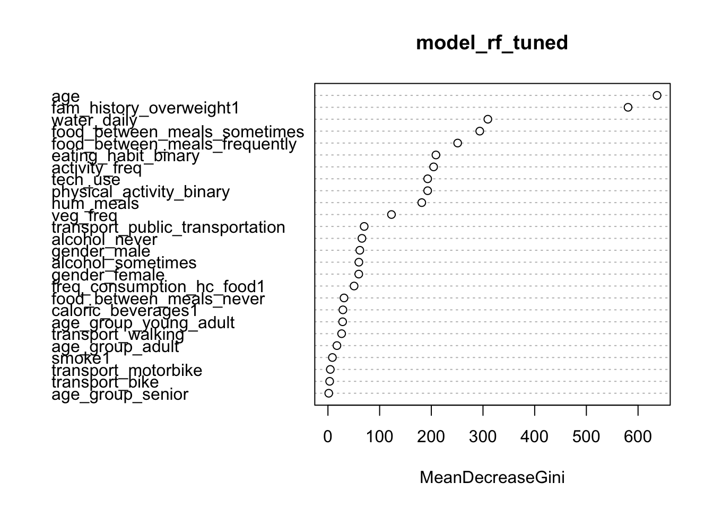

11 Model RF
11.1 Simple RF
We will begin by constructing a basic RF model with 500 trees, followed by fine-tuning our RF model through grid search.
# Set seed for reproducibility
set.seed(12345)
# Build a model
model_rf <- randomForest(as.factor(obesity_leveloverweight) ~ .,
data = train_rf,
ntree = 500)## Length Class Mode
## call 4 -none- call
## type 1 -none- character
## predicted 10379 factor numeric
## err.rate 1500 -none- numeric
## confusion 6 -none- numeric
## votes 20758 matrix numeric
## oob.times 10379 -none- numeric
## classes 2 -none- character
## importance 26 -none- numeric
## importanceSD 0 -none- NULL
## localImportance 0 -none- NULL
## proximity 0 -none- NULL
## ntree 1 -none- numeric
## mtry 1 -none- numeric
## forest 14 -none- list
## y 10379 factor numeric
## test 0 -none- NULL
## inbag 0 -none- NULL
## terms 3 terms call
According to the variable importance plot, we observe a trend comparable to that of a DT model with an implemented cost matrix, indicating that RF models may be capturing the underlying dynamics between predictors effectively. The top-ranked features in this analysis are BMI, weight-to-height ratio, and water intake per weight.
11.2 Tuned RF
Next, we will perform tuning for our model by testing different values of mtry, which specifies the number of candidate features to consider at each node during tree construction. We will also execute 10-fold cross validation.
# Set seed for reproducibility
set.seed(12345)
# Set up control parameters
ctrl <- trainControl(method = 'cv',
number = 10,
verboseIter = TRUE,
savePredictions = TRUE)
# Define the parameter grid
grid <- expand.grid(mtry = c(2, 4, 6, 8))
# Tune the model
rf_tuned <- train(as.factor(obesity_leveloverweight) ~ .,
data = train_rf,
method = 'rf',
trControl = ctrl,
tuneGrid = grid)
# Retrieve best model
model_rf_tuned <- rf_tuned$finalModel## Random Forest
##
## 10379 samples
## 26 predictor
## 2 classes: '0', '1'
##
## No pre-processing
## Resampling: Cross-Validated (10 fold)
## Summary of sample sizes: 9340, 9341, 9341, 9341, 9341, 9342, ...
## Resampling results across tuning parameters:
##
## mtry Accuracy Kappa
## 2 0.8808175 0.6893266
## 4 0.8907405 0.7259605
## 6 0.8925709 0.7309532
## 8 0.8882357 0.7200674
##
## Accuracy was used to select the optimal model using the largest value.
## The final value used for the model was mtry = 6.## Length Class Mode
## call 4 -none- call
## type 1 -none- character
## predicted 10379 factor numeric
## err.rate 1500 -none- numeric
## confusion 6 -none- numeric
## votes 20758 matrix numeric
## oob.times 10379 -none- numeric
## classes 2 -none- character
## importance 26 -none- numeric
## importanceSD 0 -none- NULL
## localImportance 0 -none- NULL
## proximity 0 -none- NULL
## ntree 1 -none- numeric
## mtry 1 -none- numeric
## forest 14 -none- list
## y 10379 factor numeric
## test 0 -none- NULL
## inbag 0 -none- NULL
## xNames 26 -none- character
## problemType 1 -none- character
## tuneValue 1 data.frame list
## obsLevels 2 -none- character
## param 0 -none- list
The final selected value for our model was mtry = 2, as it presented the highest Kappa score without compromising overall accuracy.